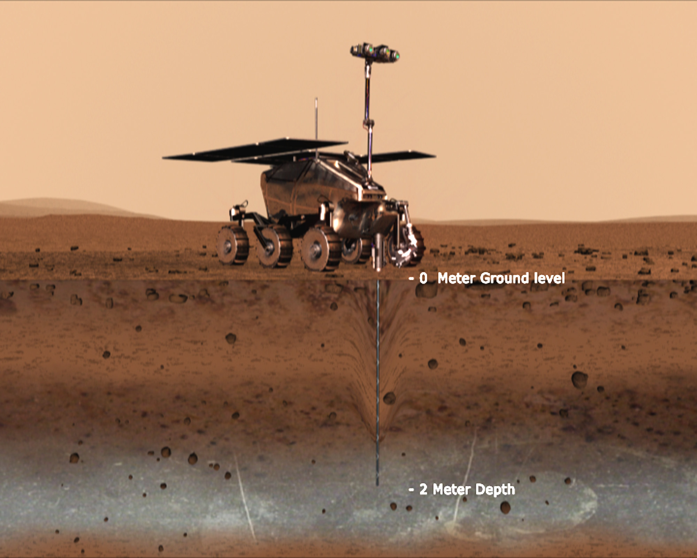

The ExoMars mission is looking for signs of life on Mars.
ExoMars (Exobiology on Mars) is an astrobiology programme of the European Space Agency (ESA).
The goals of ExoMars are to search for signs of past life on Mars, investigate how the Martian water and geochemical environment varies, investigate atmospheric trace gases and their sources and by doing so demonstrate the technologies for a future Mars sample-return mission.
The first part of the programme is a mission launched in 2016 that placed the Trace Gas Orbiter into Mars orbit and released the Schiaparelli EDM lander. The orbiter is operational but the lander crashed on the planet's surface. The second part of the programme was planned to launch in July 2020, when the Kazachok lander would have delivered the Rosalind Franklin rover on the surface, supporting a science mission that was expected to last into 2022 or beyond. On 12 March 2020, it was announced that the second mission was being delayed to 2022 as a result of problems with the parachutes, which could not be resolved in time for the launch window.
The Trace Gas Orbiter (TGO) and a test stationary lander called Schiaparelli were launched on 14 March 2016. TGO entered Mars orbit on 19 October 2016 and proceeded to map the sources of methane (CH4) and other trace gases present in the Martian atmosphere that could be evidence for possible biological or geological activity. The TGO features four instruments and will also act as a communications relay satellite. The Schiaparelli experimental lander separated from TGO on 16 October and was maneuvered to land in Meridiani Planum, but it crashed on the surface of Mars. The landing was designed to test new key technologies to safely deliver the subsequent rover mission.
In June 2023, a Roscosmos lander named Kazachok ("little Cossack", referring to a folk dance), was due to deliver the ESA Rosalind Franklin rover to the Martian surface. The rover would also include some Roscosmos built instruments. The second mission operations and communications would have been led by ALTEC's Rover Control Centre in Italy.
On 17 March 2022, ESA suspended the mission due to the ongoing invasion of Ukraine by Russia. ESA expects that a restart of the mission, using a new non-Russian landing platform, is unlikely to launch before 2028.
{kind=link}